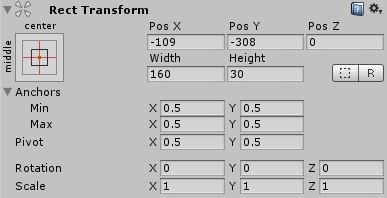

Rect Transform¶
The Rect Transform component is the 2D layout counterpart of the Transform component. Where Transform represents a single point, Rect Transform represent a rectangle that a UI element can be placed inside. If the parent of a Rect Transform is also a Rect Transform, the child Rect Transform can also specify how it should be positioned and sized relative to the parent rectangle.

Properties¶
Property: |
Function: |
|---|---|
Pos (X, Y, Z) |
Position of the rectangle’s pivot point relative to the anchors. The pivot point is the location around which the rectangle rotates. |
Width/Height |
Width and height of the rectangle. |
Left, Top, Right, Bottom |
Positions of the rectangle’s edges relative to their anchors. This can be thought of as padding inside the rectangle defined by the anchors. Shown in place of Pos and Width/Height when the anchors are separated (see below). To access these options click the square Anchor Presets box at the top left of the RectTransform component. |
Anchors |
The anchor points for the lower left corner and the upper right corner of the rectangle. |
Min |
The anchor point for the lower left corner of the rectangle defined as a fraction of the size of the parent rectangle. 0,0 corresponds to anchoring to the lower left corner of the parent, while 1,1 corresponds to anchoring to the upper right corner of the parent. |
Max |
The anchor point for the upper right corner of the rectangle defined as a fraction of the size of the parent rectangle. 0,0 corresponds to anchoring to the lower left corner of the parent, while 1,1 corresponds to anchoring to the upper right corner of the parent. |
Pivot |
Location of the pivot point around which the rectangle rotates, defined as a fraction of the size of the rectangle itself. 0,0 corresponds to the lower left corner while 1,1 corresponds to the upper right corner. |
Rotation |
Angle of rotation (in degrees) of the object around its pivot point along the X, Y and Z axis. |
Scale |
Scale factor applied to the object in the X, Y and Z dimensions. |
Blueprint Mode |
Edit RectTransforms as if they were not rotated and scaled. This enabled snapping too. |
Raw Edit Mode |
When enabled, editing pivot and anchor values will not counter adjust the position and size of the rectangle in order to make it stay in one place. |
Details¶
Note that some RectTransform calculations are performed at the end of a frame, just before calculating UI vertices, in order to ensure that they are up to date with all the latest changes performed throughout the frame. This means that they haven’t yet been calculated for the first time in the Start callback and first Update callback.
You can work around this by creating a Start() callback and adding Canvas.ForceUpdateCanvases() method to it. This will force Canvas to be updated not at the end of the frame, but when that method is called.
See the Basic Layout page for a full introduction and overview of how to use the Rect Transform.